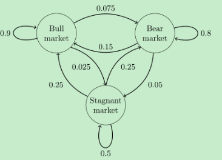

简介
马尔可夫链（Markov chain），又称离散时间马尔可夫链（discrete-time Markov chain）为状态空间中经过从一个状态到另一个状态的转换的随机过程。
该过程要求具备“无记忆”的性质：下一状态的概率分布只能由当前状态决定，在时间序列中它前面的事件均与之无关。这种特定类型的“无记忆性”称作马尔可夫性质。
在马尔可夫链的每一步，系统根据概率分布，可以从一个状态变到另一个状态，也可以保持当前状态。状态的改变叫做转移，与不同的状态改变相关的概率叫做转移概率。
随机漫步就是马尔可夫链的例子。随机漫步中每一步的状态是在图形中的点，每一步可以移动到任何一个相邻的点，在这里移动到每一个点的概率都是相同的（无论之前漫步路径是如何的）。【维基百科】
马尔可夫链的数学表示为： \(P\left(x_{t+1} | \cdots, x_{t-2}, x_{t-1}, x_{t}\right)=P\left(x_{t+1} | x_{t}\right)\) 既然某一时刻状态转移的概率只依赖前一个状态，那么只要求出系统中任意两个状态之间的转移概率，这个马尔科夫链的模型就定了。
应用
股市应用

这个马尔科夫链是用来表示股市模型，共有三种状态：牛市（Bull market）, 熊市（Bear market）和横盘（Stagnant market）。每一个状态都以一定的概率转化到下一个状态。比如，牛市以0.025的概率转化到横盘的状态。这个状态概率转化图可以以矩阵的形式表示。如果我们定义矩阵阵P某一位置P(i, j)的值为P(j|i)，即从状态i变为状态j的概率。另外定义牛市、熊市、横盘的状态分别为0、1、2，这样我们得到了马尔科夫链模型的状态转移矩阵为： \(P=\left(\begin{array}{ccc}{0.9} & {0.075} & {0.025} \\ {0.15} & {0.8} & {0.05} \\ {0.25} & {0.25} & {0.5}\end{array}\right)\) 当这个状态转移矩阵P确定以后，整个股市模型就已经确定！
PageRank算法
如何使用给定集之间的现有链接对给定集的页进行排名。如果N是已知网页的数量，一个页面i有k个链接到这个页面，那么它到链接页面的转换概率为\(\frac{\alpha}{k}+\frac{1-\alpha}{N}\)到未链接页面的概率为\(\frac{1-\alpha}{N}\)，其中超参\(\alpha=0.85\)。
马尔可夫的性质
马尔可夫链的收敛性
如果确定了马尔科夫链模型的状态转移矩阵P，假设初始状态s=[0.2,0.2,0.6]，那么在这样的初始状态下，按照P转移n次，最终都会收敛于一个特定的数，上例最终收敛于[0.624,0.312,0.064]，则第一种事件发生的可能性最大。在排名算法中，则是，该网页的权重更大排名更靠前。
收敛性需要满足的条件
1.可能的状态数是有限的。 2.状态间的转移概率需要固定不变。 3.从任意状态能够转变到任意状态。 4.不能是简单的循环，例如全是从x到y再从y到x。
马尔可夫链是否可约
如果一个马尔可夫链可以从任何其他状态到达任何状态（不一定是在一个时间步内），那么它是不可约的。如果状态空间是有限的，并且链可以用图表示，那么我们可以说不可约马尔可夫链的图是强连通的（图论）。
左边的链是可约的：从3到4我们不能到达1或2。右边的链（添加了一条边）是不可约的：每个状态都可以从任何其他状态到达。
马尔可夫链重现性
若马尔可夫链在到达一个状态后，在演变中能反复回到该状态，则该状态具有重现性或复发性，或该马尔可夫链具有（局部）重现性，反之则具有瞬变性或短暂性
参考链接： https://zh.wikipedia.org/wiki/%E9%A9%AC%E5%B0%94%E5%8F%AF%E5%A4%AB%E9%93%BE https://blog.csdn.net/bitcarmanlee/article/details/82819860 https://baijiahao.baidu.com/s?id=1626496369744727412&wfr=spider&for=pc